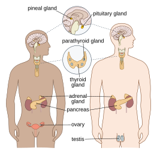
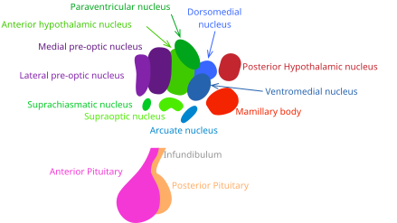
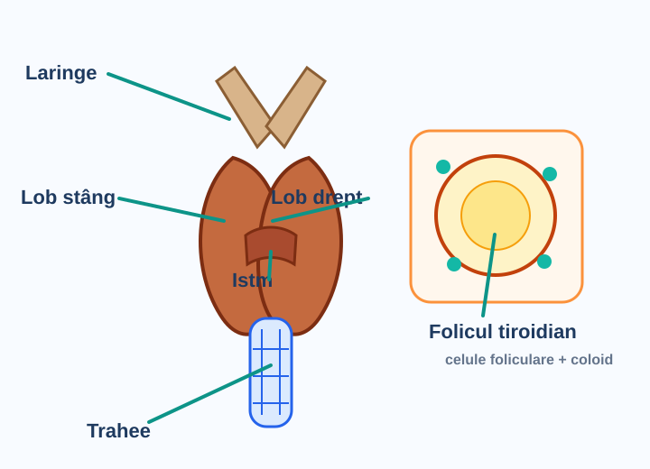
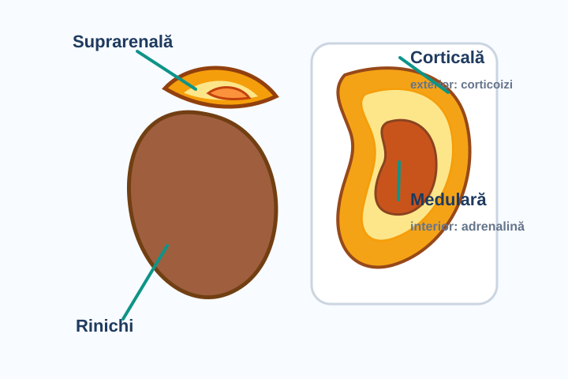
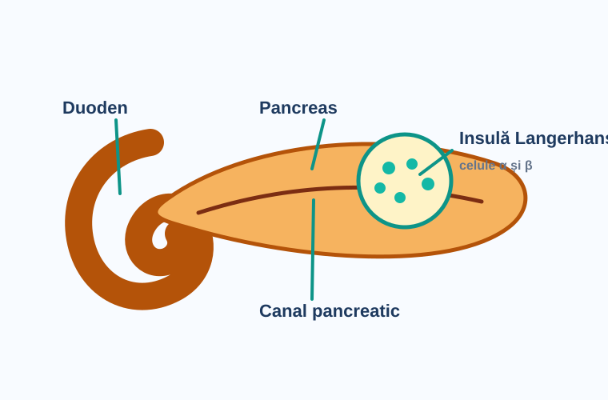
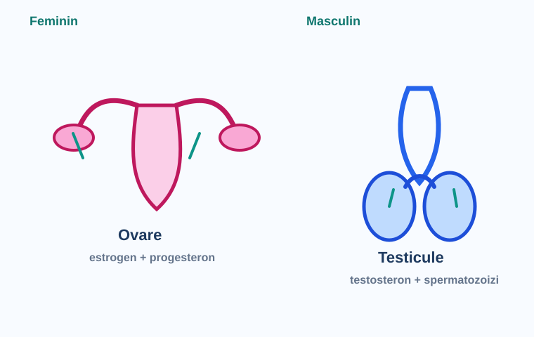

Sistemul Endocrin
Cuprinde totalitatea glandelor care produc hormoni — mesageri chimici transportați direct prin sânge pentru a controla funcțiile vitale ale organismului.
🔬 Ce este sistemul endocrin?
Sistemul endocrin cuprinde totalitatea glandelor cu secreție internă, adică glandele care produc hormoni. Hormonii sunt mesageri chimici care sunt vărsați direct în sânge și acționează la distanță de locul sintezei lor, asupra unor celule specifice numite celule țintă.
🏛️ Glandele sistemului endocrin
Principalele glande endocrine din organism:
🧠 Hipofiza (Glanda pituitară)
„Creierul endocrin" — controlează celelalte glande
🦋 Tiroida
Cea mai mare glandă endocrină pură (25-30 g)
🫘 Glandele suprarenale
Situate la polul superior al rinichilor
🫁 Pancreasul endocrin
Glandă mixtă — insulele Langerhans
⚥ Gonadele endocrine
Ovare (estrogen/progesteron) + Testicule (testosteron)
🌙 Epifiza + Timusul
Glanda pineală (melatonină) + rol imunitar
🗺️ Hartă vizuală: unde sunt glandele endocrine?
Învață-le de sus în jos: cap → gât → torace → abdomen → pelvis. Așa nu le încurci la recapitulare.

Epifiza, hipotalamus, hipofiza control rapid al altor glande Tiroida + paratiroidele metabolism și calcemie Timusul important în imunitate Suprarenale + pancreas stres, săruri, glicemie Gonade ovare/testicule: hormoni sexualiDiagramă educațională: fiecare linie arată poziția glandei în corp. Reține ideea mare: hormonii sunt produși local, dar circulă prin sânge și pot acționa la distanță.
⚗️ Ce sunt hormonii?
- Sunt substanțe chimice sintetizate în glande endocrine
- Sunt eliberați direct în sânge (nu prin canale)
- Acționează asupra unor celule țintă specifice
- Au concentrații foarte mici, dar efecte puternice
- Reglează metabolismul, creșterea, reproducerea și homeostazia
🎯 Test — Lecția 1
Hipofiza — Lobul Anterior
Adenohipofiza (75% din hipofiză) secretă 6 hormoni esențiali care controlează creșterea, metabolismul și reproducerea.
🧠 Hipofiza — prezentare generală
- Supranumită „Creierul endocrin" — controlează activitatea celorlalte glande endocrine
- Localizată la baza encefalului în șaua turcească a osului sfenoid
- Dimensiunea unui bob de fasole, cântărind ~0,5 grame
- Legată de hipotalamus prin tija hipofizară (conține tract nervos + rețea vasculară)
🟡 Lobul intermediar = 2%
🟢 Lobul posterior (neurohipofiza) = 23%
🧭 Hipofiza pe imagine: lobii și legătura cu hipotalamusul
Hipofiza este mică, dar controlează multe glande. Când vezi schema, separă mereu „partea care produce” de „partea care depozitează”.

Hipotalamus dă comenzi către hipofiză Tija hipofizară legătură nervoasă și vasculară Adenohipofiza lob anterior: STH, PRL, TSH, ACTH, FSH, LH Neurohipofiza lob posterior: eliberează ADH și oxitocină💊 Categoria 1: Hormoni nonglandulotropi
Acționează direct asupra țesuturilor periferice (nu asupra altor glande).
a) STH — Hormonul Somatotrop (Hormonul de creștere)
- Stimulează creșterea și dezvoltarea întregului organism
- Determină creșterea oaselor și dezvoltarea musculaturii
- Creșterea viscerelor (cu excepția creierului)
- Stimulează sinteza proteinelor prin stimularea pătrunderii aminoacizilor
La adult: Acromegalie — creșterea extremităților (mâini, picioare, mandibulă, nas, urechi, organe interne)
b) Prolactina (PRL)
- Stimulează dezvoltarea glandelor mamare
- Stimulează secreția de lapte în timpul sarcinii și alăptării
- Este un inhibitor al ovulației (în timpul alăptării)
🎯 Categoria 2: Hormoni glandulotropi
Stimulează dezvoltarea și secreția altor glande endocrine.
| Hormon | Denumire completă | Acțiune |
|---|---|---|
| TSH | Tireotropina (hormon tireotrop) | Stimulează secreția tiroidei |
| ACTH | Corticotropina | Controlează activitatea zonei corticale a suprarenalei |
| FSH | Hormon foliculostimulant |
♀ dezvoltarea foliculilor + secreție estrogen ♂ dezvoltarea tubilor seminiferi + spermatogeneză ⚥ formarea gameților (ambele sexe) |
| LH | Hormon luteinizant |
♀ ovulație + corp galben (secretă progesteron) ♂ stimulează secreția de testosteron |
🎯 Test — Lecția 2
Hipofiza — Lobul Mijlociu & Posterior
Lobul intermediar secretă MSH pentru pigmentarea pielii. Lobul posterior depozitează și eliberează ADH și Oxitocina — hormoni produși de hipotalamus.
🎨 Lobul intermediar
Reprezintă 2% din masa hipofizei. Produce un singur hormon important:
MSH are aceleași origini moleculare cu ACTH (ambii provin din aceeași moleculă precursoare).
🫗 Lobul posterior (Neurohipofiza)
Reprezintă 23% din hipofiză. Nu produce hormoni proprii — depozitează și eliberează în circulație hormoni produși de hipotalamusul anterior:
1. ADH — Hormonul Antidiuretic (Vasopresina)
- Stimulează reabsorbția apei la nivelul tubilor contorți distali și al tubilor colectori ai rinichiului
- Principala acțiune = concentrarea urinei → retenție de apă în organism
2. Oxitocina
- Stimulează contracțiile uterului gravid, mai ales în pregătirea travaliului
- Stimulează ejecția laptelui din glandele mamare în timpul alăptării (prin contracția celulelor mioepiteliale din pereții alveolelor)
Oxitocina → contracții uterine + ejecție lapte
🔗 Schema Hipotalamus-Hipofiză
↓ (tija hipofizară)
HIPOFIZĂ
STH, PRL, TSH, ACTH, FSH, LH
MSH
ADH, Oxitocina
🎯 Test — Lecția 3
Tiroida
Cea mai mare glandă endocrină pură — secretă hormoni care conțin iod și reglează metabolismul, creșterea și termogeneza.
🦋 Anatomie și structură
- Este cea mai mare glandă endocrină — 25-30 grame
- Localizată în partea anterioară a gâtului, în dreptul cartilajului tiroid al laringelui
- Are forma literei „H" — doi lobi uniți prin istmul tiroidian
- Celulele endocrine sunt aranjate în foliculi tiroidieni = vezicule pline cu un lichid vâscos numit coloid (conține tireoglobulina — forma de depozit a hormonilor)
- Conține și celule parafoliculare (celule C) care secretă calcitonina
- Secreția este reglată prin mecanism de feedback hipotalamo-hipofizo-tiroidian, controlat de TSH
🦋 Tiroida pe imagine: ce trebuie recunoscut
Tiroida stă în fața gâtului și are doi lobi uniți printr-o punte numită istm. În interior, hormonii sunt legați de foliculii tiroidieni.

Laringe reper anatomic deasupra tiroidei Lobii tiroidei cei doi „aripi” ale glandei Trahee tubul respirator din spate Folicul tiroidian coloid + celule folicularePentru test: leagă imaginea de ideea-cheie „T3/T4 au iod și cresc metabolismul”, iar calcitonina scade calcemia.
⚗️ Hormonii tiroidieni
Tiroida secretă doi hormoni care conțin iod:
T4 — Tiroxina
Forma principală secretată; acționează mai lent
T3 — Triiodotironina
Forma activă; acționează mai rapid, mai potent
📋 Acțiunile hormonilor tiroidieni
- Stimulează creșterea și dezvoltarea, mai ales la nivelul sistemului nervos → diferențierea neuronilor, mielinizarea axonilor, dezvoltarea sinapselor
- Stimulează activitățile celulare cu producere de căldură → tiroida este o glandă termogenetică
- Sunt singurii hormoni care stimulează metabolismul pe toate cele trei metabolisme (glucidic, lipidic, proteic)
- Reglează caloricul (consumul energetic bazal)
- Mențin umiditatea pielii (împreună cu prolactina)
- Controlează funcția de reproducere
⚠️ Disfuncții tiroidiene
⬇ Hiposecreție (Hipotiroidism)
⬆ Hipersecreție — Boala Basedow-Graves (Gușa toxică)
- Creșterea în dimensiune a glandei (gușă)
- Hiperfagie cu scădere în greutate
- Tahicardie (puls accelerat)
- Piele caldă și umedă
- Intoleranță la căldură
- Tremurături ale mâinilor
- Labilitate emoțională, nervozitate, agitație
- Exoftalmie — bulbucarea ochilor (50% din cazuri)
🫘 Gușa endemică
Cauzată de lipsa iodului din alimentație. Glanda crește mult în dimensiuni, stimulată de TSH hipofizar, dar nu poate produce hormoni (lipsa iodului). Apar simptomele hipotiroidiei.
🎯 Test — Lecția 4
Glandele Suprarenale
Situate la polul superior al rinichilor, alcătuite din două zone distincte: corticala (3 tipuri de hormoni) și medulara (adrenalina).
🫘 Structura generală
- Sunt glande pereche, situate la polul superior al rinichilor
- Sunt alcătuite din două zone distincte (embriologic, anatomic și funcțional):
🔵 Zona Corticală (Corticosuprarenala — CSR)
Dispusă la periferia glandei, înconjoară complet zona medulei
🟡 Zona Medulei (Medulosuprarenala — MSR)
Porțiunea centrală, funcționează ca un ganglion simpatic
🧅 Suprarenala pe imagine: cortex la exterior, medulă la interior
Imaginează-ți suprarenala ca pe o glandă „în straturi”: exteriorul secretă hormoni steroizi, interiorul secretă adrenalina și noradrenalina.

Corticala mineralocorticoizi, glucocorticoizi, sexosteroizi Medulara adrenalină 80%, noradrenalină 20% Rinichi + suprarenală glanda stă deasupra rinichiului🔵 A. Corticosuprarenala (CSR)
Secretă trei categorii de hormoni steroizi (sintetizați din colesterol):
1. Mineralocorticoizi = Aldosteron
- Reglează metabolismul mineral și hidric
- Stimulează reabsorbția Na⁺ și a apei la nivelul renal
- Stimulează excreția K⁺ și H⁺ la nivelul renal
- Menține echilibrul hidro-electrolitic și presiunea sangvină
2. Glucocorticoizi = Cortizol
- Stimulează gluconeogeneza din aminoacizi → menține glicemia în limite normale
- Au puternic rol antiinflamator (baza terapiei cu corticosteroizi)
- Controlat de ACTH hipofizar
3. Sexosteroizi = Estrogeni și Testosteron
- Susțin funcția gonadelor
- Contribuie la apariția și menținerea caracterelor sexuale secundare
🟡 B. Medulosuprarenala (MSR)
Secretă catecolamine:
Adrenalina (Epinefrina) — 80%
Principala catecolamină, răspuns la stres acut
Noradrenalina (Norepinefrina) — 20%
Predominant vasoconstrictor
Efectele adrenalinei/noradrenalinei:
- 🫀 Cardiovascular: tahicardie, vasoconstricție, hipertensiune; crește debitul cardiac
- 🫁 Respirator: bronhodilatație, creșterea frecvenței respiratorii
- 🍬 Metabolic glucidic: glicogenoliză → hiperglicemie (mobilizare glucoză pentru energie)
- 🧠 SNC: alertă, vigilență, stimularea sistemului reticular ascendent
- 👁️ Alte efecte: dilatarea pupilei, contracția firelor de păr, inhibarea secreției digestive
🎯 Test — Lecția 5
Pancreasul Endocrin
Glandă mixtă (exocrină + endocrină) — insulele Langerhans secretă insulină și glucagon, reglând glicemia.
🫁 Structura pancreasului
- Pancreasul este o glandă mixtă cu secreție dublă:
- Exocrină: sucul pancreatic (enzime digestive)
- Endocrină: hormoni
- Localizat în cavitatea abdominală, în spatele stomacului, în potcoava duodenului
- Celulele endocrine sunt grupate în insulele Langerhans = 1-3% din masa pancreasului
Celule α (alfa)
Secretă glucagon — hormon hiperglicemiant
Celule β (beta)
Secretă insulină — singurul hormon hipoglicemiant
🍬 Pancreasul pe imagine: partea endocrină
Pancreasul are și rol digestiv, dar pentru endocrinologie contează insulele Langerhans: celulele alfa cresc glicemia, celulele beta o scad.

Insulă Langerhans zona endocrină: 1-3% din pancreas Coada pancreasului parte a glandei pancreatice Duoden pancreasul stă în potcoava lui Vezică biliară reper lângă ficat și duoden📈 Glucagonul — Hormon hiperglicemiant
Crește glicemia prin două mecanisme principale:
- Glicogenoliza hepatică: descompunerea glicogenului hepatic în glucoză
- Gluconeogeneza: sinteza de novo a glucozei din precursori neglucidici (aminoacizi, acizi grași)
Metabolism lipidic: ↑ lipoliză
Metabolism proteic: ↑ proteoliză
+ forța de contracție miocardică, secreția biliară
📉 Insulina — Singurul hormon hipoglicemiant
Insulina a fost descoperită pentru prima oară de cercetătorul român Nicolae C. Paulescu în 1921. Redescoperită de canadienii F.G. Banting și J.J.R. MacLeod.
- Este singurul hormon hipoglicemiant
- Este singurul hormon care stimulează anabolismul pe toate cele 3 metabolisme
- Determină pătrunderea glucozei în celule și intensifică glicoliza (consumul glucozei → energie)
- Stimulează lipogeneza (sinteza de lipide din glucoză)
Efectele metabolice ale insulinei:
| Metabolism | Ficat | Țesut adipos | Mușchi |
|---|---|---|---|
| Glucidic | ↑ glicogeneză, ↓ gluconeogeneză | ↑ transportul glucozei, ↑ sinteza glicerolului | ↑ transportul glucozei, ↑ glicoliză, ↑ sinteza glicogenului |
| Lipidic | ↑ lipogeneză | ↑ trigliceride, ↑ enzime lipogenice, ↓ lipoliză | — |
| Proteic | ↓ proteoliză | — | ↑ captarea aminoacizilor, ↑ sinteza proteică |
⚠️ Diabetul zaharat — Hiposecreție de insulină
Principala disfuncție pancreatică endocrină:
- Hiperglicemie
- Glucozurie (glucoză în urină)
- Poliurie (urină multă)
- Polidipsie (sete, consum mare de apă)
- Polifagie (consum mare de alimente)
- Scădere în greutate
- Cetonemie (corpi cetonici în sânge)
- Cetonurie (corpi cetonici în urină)
- Dezechilibre acido-bazice
- Compromiterea funcțiilor organelor vitale
🎯 Test — Lecția 6
Gonadele Endocrine
Ovarele și testiculele sunt glande mixte — pe lângă funcția reproductivă secretă hormoni sexuali esențiali pentru dezvoltare.
⚥ Generalități
Gonadele (ovarele și testiculele) sunt glande mixte cu secreție dublă:
- Exocrină: gameți (ovule, spermatozoizi)
- Endocrină: hormoni sexuali
Activitatea gonadelor este controlată de hormonii hipofizari FSH și LH.
⚥ Gonadele pe imagine: ovare și testicule
Gonadele sunt glande mixte: produc gameți și secretă hormoni sexuali. Învață-le împreună cu FSH și LH, pentru că hipofiza le coordonează.

Testicule testosteron, spermatogeneză Ovare estrogen + progesteron♀️ 1. Ovarele — secretă estrogen și progesteron
a) Estrogenul
- Stimulează dezvoltarea organelor reproducătoare feminine
- Determină apariția caracterelor sexuale secundare feminine:
- Dezvoltarea sânilor
- Depunerea țesutului adipos la nivelul șoldurilor
- Dezvoltarea bazinului osos
b) Progesteronul
- Determină suprimarea contracțiilor uterine în vederea nidației (fixarea embrionului)
- Pregătește mucoasa uterină pentru implantarea ovulului fecundat
- Menține sarcina în primele luni
♂️ 2. Testiculele — secretă testosteron
- Testosteronul determină dezvoltarea organelor genitale masculine
- Determină apariția caracterelor sexuale secundare masculine:
- Îngroșarea vocii
- Dezvoltarea musculaturii
- Creșterea bărbii și a mustății
- Creșterea pilozității corporale
- Stimulează spermatogeneza (împreună cu FSH)
- Secretat de celulele Leydig ale testiculului, stimulate de LH
🎯 Test — Lecția 7
Disfuncții Endocrine
Recapitulare completă a bolilor cauzate de hipo- sau hipersecreția hormonilor, plus glandele pineală și timusul.
🌙 Epifiza (Glanda pineală)
- Situată între tuberculii cvadrigemeni superiori
- Secretă melatonină, cu acțiune frânatoare asupra funcției gonadelor
- Secretă și vasotocina, cu puternică acțiune antigonadotropă
- Lumina stimulează scăderea secreției de melatonină; la întuneric, secreția crește → rol în ritmul circadian (somn/veghe)
🛡️ Timusul
- Are rol de glandă endocrină și organ limfatic central
- Structura mixtă: epiteliu secretor + organ limfatic
- Se involucează la pubertate (dispare treptat)
- Funcțiile timusului sunt blocate de hormonii steroizi
- Hormoni timici: acțiune de frânare a dezvoltării gonadelor, acțiune asupra mineralizării osoase, efecte de oprire a mitozelor
- Histologic: lobul timic format din celule reticulare, între care sunt celule stem migrante din măduva hematopoietică (limfocite T)
📊 Tabel recapitulativ — Disfuncții endocrine
| Glandă | Afecțiune | Cauză | Simptome principale |
|---|---|---|---|
| Hipofiza | Nanism hipofizar | ⬇ STH la copil | Statură mică, armonioasă, intelect normal |
| Hipofiza | Gigantism | ⬆ STH la copil | Înălțime peste 2m |
| Hipofiza | Acromegalie | ⬆ STH la adult | Creșterea extremităților (mâini, picioare, mandibulă) |
| Hipofiza | Diabet insipid | ⬇ ADH | Poliurie cu urină diluată, polidipsie |
| Tiroidă | Cretinism | ⬇ T3/T4 la copil | Nanism, deformări, înapoiere mentală |
| Tiroidă | Mixedem | ⬇ T3/T4 la adult | Obezitate, frig, piele uscată, apatie, memorie slabă |
| Tiroidă | B. Basedow-Graves | ⬆ T3/T4 | Tahicardie, exoftalmie, scădere în greutate, tremurături |
| Tiroidă | Gușă endemică | Lipsă iod | Glandă mărită, hipotiroidism |
| Suprarenale | Boala Addison | ⬇ cortizol+aldosteron | Hipotensiune, hiperpigmentare, astenie |
| Suprarenale | Sd. Cushing | ⬆ cortizol | Față „lună plină", obezitate centrală, HTA, hiperglicemie |
| Suprarenale | Boala Conn | ⬆ aldosteron | Edeme, HTA, hipokaliemie |
| Pancreas | Diabet zaharat | ⬇ insulină | Hiperglicemie, glucozurie, poliurie, polidipsie, scădere în greutate |
🔁 Mecanism feedback hipotalamo-hipofizar
↓
Hipofiza anterioară (adenohipofiza) → secretă hormoni tropici (TSH, ACTH, FSH, LH)
↓
Glandele țintă (tiroidă, suprarenale, gonade) → secretă hormonii finali
↓
Feedback negativ: când concentrația hormonilor finali crește → inhibă hipotalamusul și hipofiza → scade secreția
📚 Dicționar rapid: ce înseamnă componentele din scheme?
Când înveți după desen, întâi identifică piesele. Apoi le legi de hormon și de efect. Așa materia devine mai ușor de ținut minte.
Unitatea microscopică a tiroidei. Este ca o mică veziculă: pe margine are celule foliculare, iar în centru are coloid, unde se depozitează precursorii hormonilor T3 și T4.
Lichid vâscos din foliculul tiroidian. Conține tireoglobulină, adică forma de depozit pentru hormonii tiroidieni.
Celule din tiroidă care nu produc T3/T4. Ele secretă calcitonină, hormon care scade calcemia prin fixarea Ca²⁺ în oase.
Patru glande mici pe spatele tiroidei. Secretă PTH, hormon care crește calcemia. Sunt importante pentru echilibrul calciului.
Puntea de țesut care unește lobul stâng și lobul drept al tiroidei. De aceea tiroida are formă de „H”.
Lobul anterior al hipofizei. Produce hormoni proprii: STH, PRL, TSH, ACTH, FSH și LH.
Lobul posterior al hipofizei. Nu produce hormonii principali, ci depozitează și eliberează ADH și oxitocină produse în hipotalamus.
Legătura dintre hipotalamus și hipofiză. Prin ea trec căi nervoase și vase care duc semnale de control.
Zonă a hipotalamusului implicată în legătura vasculară cu adenohipofiza. Ajută hipotalamusul să controleze secreția hipofizei anterioare.
Partea externă a glandei suprarenale. Produce hormoni steroizi: mineralocorticoizi, glucocorticoizi și sexosteroizi.
Partea internă a glandei suprarenale. Produce catecolamine: adrenalină și noradrenalină, importante în reacția de stres.
Partea endocrină a pancreasului. Celulele alfa secretă glucagon, iar celulele beta secretă insulină.
Celule care au receptori pentru un anumit hormon. Hormonul circulă prin sânge, dar acționează doar unde găsește receptorul potrivit.
🃏 Cartonașe de verificare
Apasă pe un cartonaș ca să vezi răspunsul. Încearcă întâi să spui răspunsul cu voce tare.
Ce diferență este între endocrin și exocrin?
Endocrin = hormonii intră direct în sânge. Exocrin = secreția pleacă prin canal/duct spre o suprafață sau cavitate.
Cum țin minte hipofiza?
Anterior produce 6 hormoni. Mijlociu produce MSH. Posterior eliberează ADH și oxitocină.
Ce face TSH?
TSH stimulează tiroida să producă și să secrete hormonii tiroidieni T3 și T4.
Ce face ACTH?
ACTH stimulează corticosuprarenala, mai ales secreția de glucocorticoizi.
De ce apare gușa endemică?
Din lipsă de iod. Tiroida este stimulată de TSH, se mărește, dar nu poate produce suficienți hormoni T3/T4.
Insulina vs glucagon?
Insulina scade glicemia și favorizează depozitarea. Glucagonul crește glicemia prin glicogenoliză și gluconeogeneză.
Addison vs Cushing?
Addison = prea puțini hormoni corticosuprarenali. Cushing = prea mult cortizol.
FSH vs LH?
FSH ajută foliculii ovarieni și spermatogeneza. LH declanșează ovulația și stimulează testosteronul.
✅ Metode rapide de auto-verificare
1. Metoda „glanda → hormon → efect”
- Alege o glandă: tiroida.
- Spune hormonii: T3, T4, calcitonină.
- Spune efectul: metabolism, creștere, calcemie.
2. Metoda „hipo vs hiper”
- Hipo = prea puțin hormon.
- Hiper = prea mult hormon.
- Leagă boala de direcție: hipo T3/T4 la adult = mixedem; hiper T3/T4 = Basedow-Graves.
3. Metoda „unde este în desen?”
- Arată poziția pe corp.
- Numește subcomponenta: folicul, corticală, medulară, insulă.
- Spune ce produce acea subcomponentă.
4. Metoda „semn clinic → glandă”
- Exoftalmie + slăbire = tiroidă hiperactivă.
- Poliurie + polidipsie + hiperglicemie = pancreas endocrin.
- Față „lună plină” = cortizol crescut.
🏆 Test Final — Disfuncții & Recapitulare
Felicitări! Ai parcurs toate lecțiile!
Revizuiește lecțiile cu note slabe și reia testele pentru a consolida cunoștințele. Succes la examen!
Întrebări de Antrenament
O bancă separată de întrebări, în stil „verifică dacă chiar ai înțeles”: grile, răspuns scurt, adevărat/fals, asocieri și cazuri rapide.
🎯 Cum folosești secțiunea
Varianta rapidă
- Citești întrebarea.
- Spui răspunsul fără să deschizi explicația.
- Deschizi „Răspuns” și verifici.
Varianta pentru notă mare
- Scrii răspunsul pe caiet.
- Adaugi hormonul și boala asociată.
- Verifici dacă ai inclus și subcomponenta: folicul, corticală, insulă etc.
🧠 Întrebări grilă explicate
Care este diferența principală dintre adenohipofiză și neurohipofiză?
A. Adenohipofiza depozitează ADH, neurohipofiza produce TSH
B. Adenohipofiza produce hormoni proprii, neurohipofiza eliberează hormoni produși de hipotalamus
C. Ambele produc insulină
D. Ambele sunt părți ale tiroidei
Răspuns
B. Adenohipofiza produce STH, PRL, TSH, ACTH, FSH, LH. Neurohipofiza eliberează ADH și oxitocină produse în hipotalamus.
Ce componentă a tiroidei depozitează precursorii hormonilor T3/T4?
A. Istmul
B. Coloidul
C. Medulara
D. Celulele beta
Răspuns
B. Coloidul conține tireoglobulină, forma de depozit pentru hormonii tiroidieni.
Care pereche glandă-hormon este corectă?
A. Tiroidă - insulină
B. Pancreas endocrin - glucagon
C. Epifiză - aldosteron
D. Medulosuprarenală - TSH
Răspuns
B. Pancreasul endocrin secretă insulină și glucagon prin insulele Langerhans.
Ce hormon este hipocalcemiant?
A. Calcitonina
B. PTH
C. Glucagonul
D. Cortizolul
Răspuns
A. Calcitonina scade calcemia. PTH are efect opus: crește calcemia.
✍️ Întrebări cu răspuns scurt
Explică în 2 propoziții de ce hipofiza este numită „creierul endocrin”.
Model de răspuns
Hipofiza controlează activitatea altor glande endocrine prin hormoni tropici. De exemplu, TSH stimulează tiroida, ACTH stimulează corticosuprarenala, iar FSH/LH controlează gonadele.
Ce sunt celulele țintă?
Model de răspuns
Sunt celule care au receptori pentru un anumit hormon. Hormonul circulă prin sânge, dar acționează numai asupra celulelor care au receptorul potrivit.
De ce diabetul zaharat nu este același lucru cu diabetul insipid?
Model de răspuns
Diabetul zaharat apare prin deficit de insulină și duce la hiperglicemie. Diabetul insipid apare prin deficit de ADH și duce la eliminarea unei cantități mari de urină diluată.
Ce înseamnă „glandă mixtă”? Dă două exemple.
Model de răspuns
O glandă mixtă are și secreție endocrină, și secreție exocrină. Exemple: pancreasul, ovarele și testiculele.
⚖️ Adevărat sau fals
Neurohipofiza produce direct ADH și oxitocină.
Răspuns
Fals. ADH și oxitocina sunt produse de hipotalamus; neurohipofiza le depozitează și le eliberează.
Celulele beta pancreatice secretă insulină.
Răspuns
Adevărat. Celulele beta scad glicemia prin insulină; celulele alfa cresc glicemia prin glucagon.
Medulosuprarenala secretă cortizol.
Răspuns
Fals. Cortizolul este secretat de corticosuprarenală. Medulosuprarenala secretă adrenalină și noradrenalină.
Gușa endemică poate apărea în lipsa iodului.
Răspuns
Adevărat. Fără iod, tiroida nu produce suficienți hormoni, iar TSH o stimulează excesiv și se mărește.
🔗 Asocieri rapide
Asociază hormonul cu efectul: ADH, insulină, glucagon, calcitonină.
1. Scade glicemia
2. Crește glicemia
3. Reține apa la rinichi
4. Scade calcemia
Răspuns
ADH - 3; insulină - 1; glucagon - 2; calcitonină - 4.
Asociază boala cu hormonul implicat: gigantism, mixedem, Cushing, diabet zaharat.
A. Cortizol crescut
B. STH crescut la copil
C. Insulină scăzută
D. T3/T4 scăzute la adult
Răspuns
Gigantism - B; mixedem - D; Cushing - A; diabet zaharat - C.
Asociază subcomponenta cu glanda: folicul, corticală, insulă Langerhans, celule Leydig.
Răspuns
Folicul - tiroidă; corticală - suprarenală; insulă Langerhans - pancreas; celule Leydig - testicul.
🩺 Mini-cazuri ca la test
Un adult are scădere în greutate, tremurături, tahicardie și exoftalmie. Ce suspectezi?
Răspuns
Hipertiroidism, cel mai probabil boala Basedow-Graves. Hormonii T3/T4 sunt în exces.
Un copil are statură mică armonioasă și intelect normal. Ce deficit poate fi?
Răspuns
Deficit de STH în copilărie, adică nanism hipofizar.
Un pacient are poliurie mare cu urină diluată și sete intensă, dar nu are hiperglicemie. Ce hormon lipsește?
Răspuns
ADH. Este diabet insipid, nu diabet zaharat.
Un pacient are față „lună plină”, obezitate centrală, hipertensiune și hiperglicemie. Ce exces hormonal sugerează?
Răspuns
Exces de cortizol, adică sindrom Cushing.